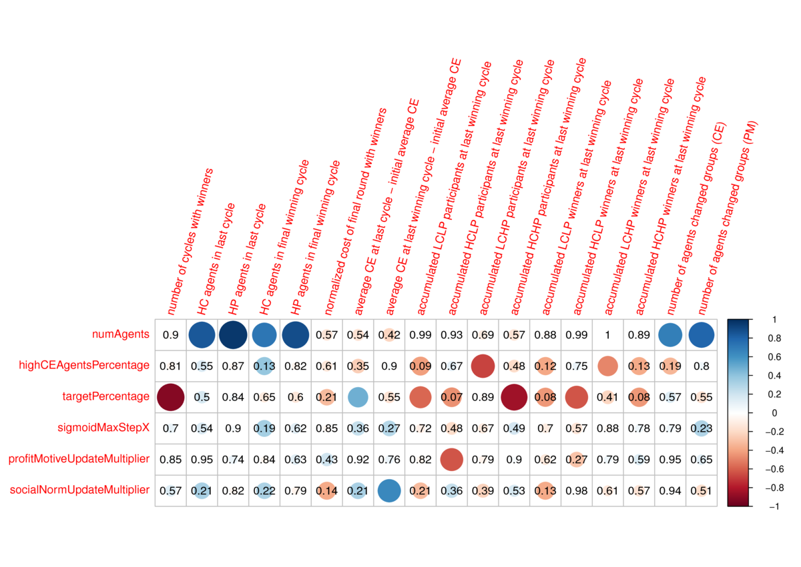
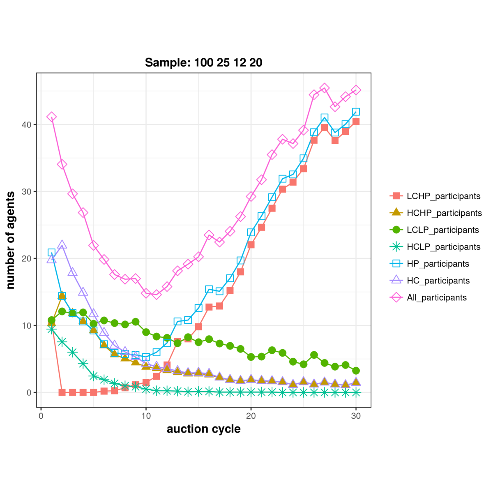
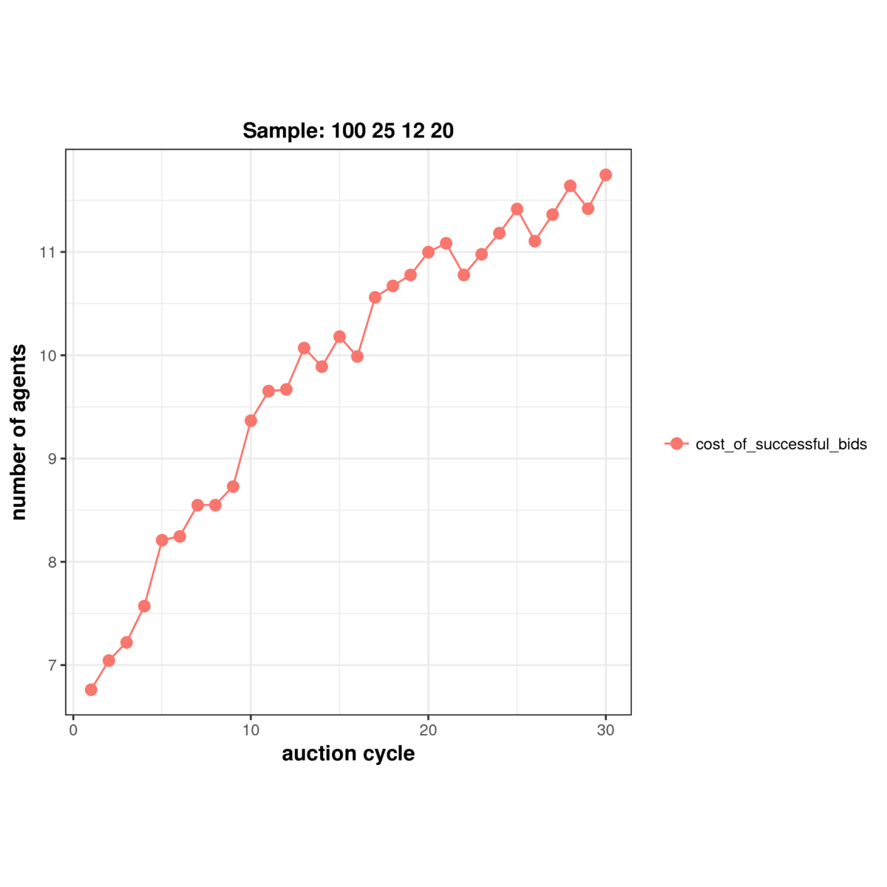
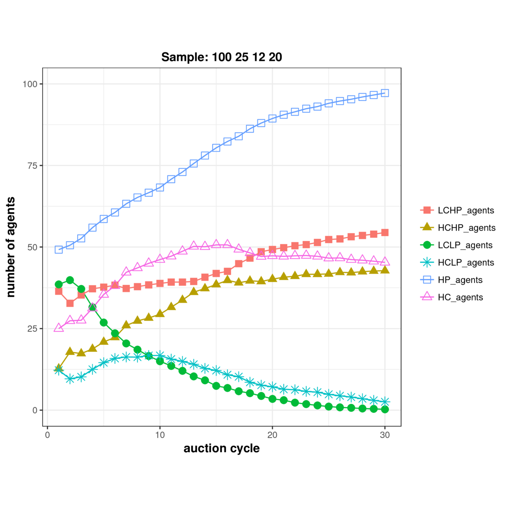
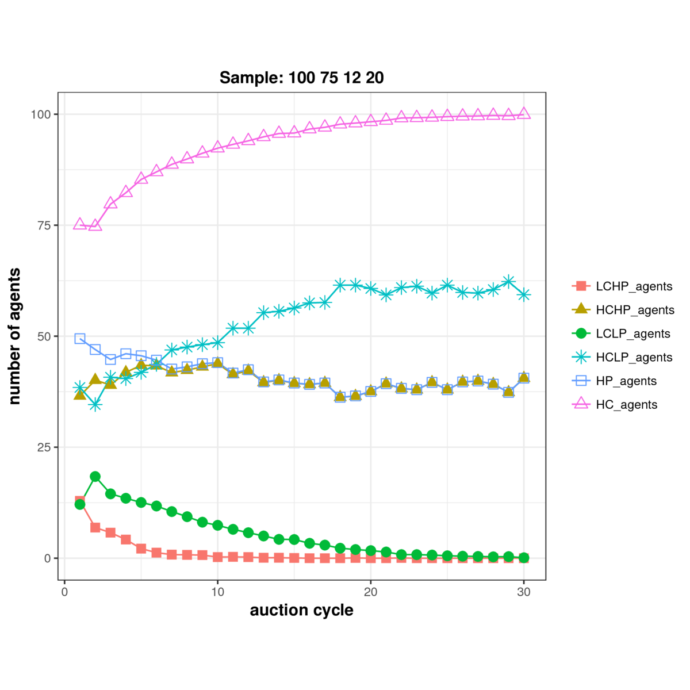
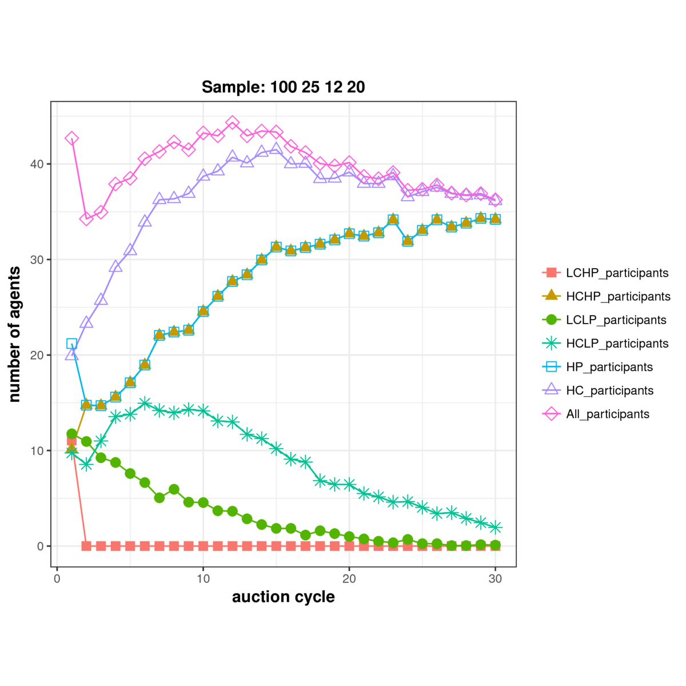
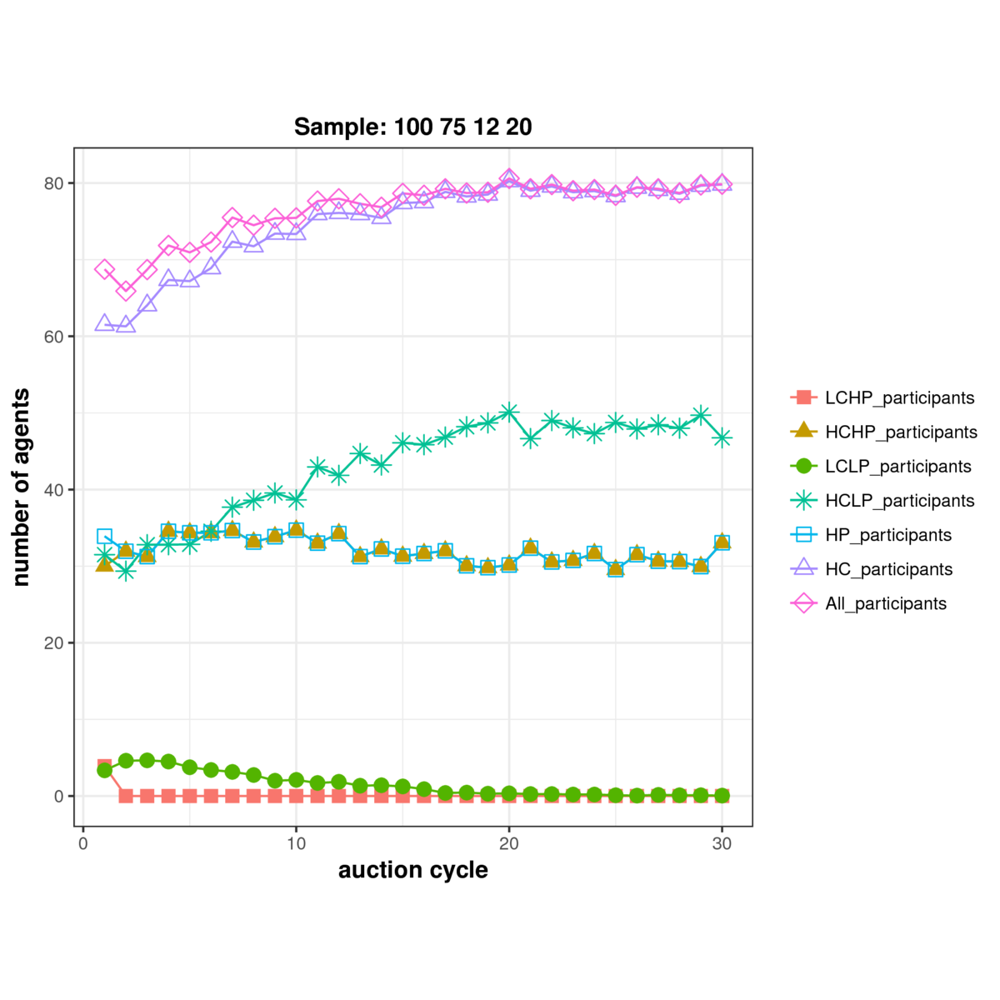
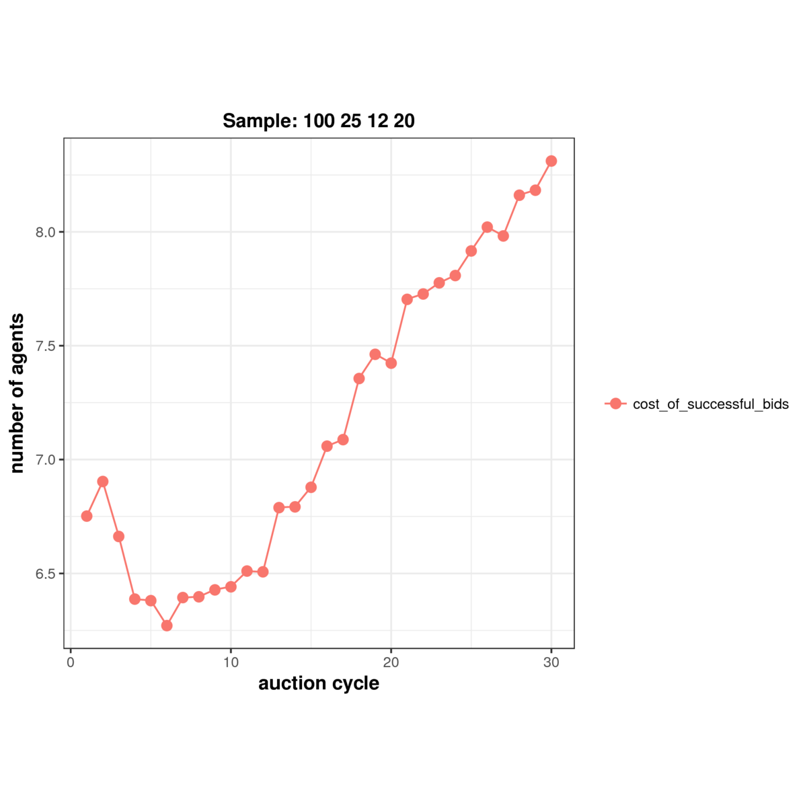
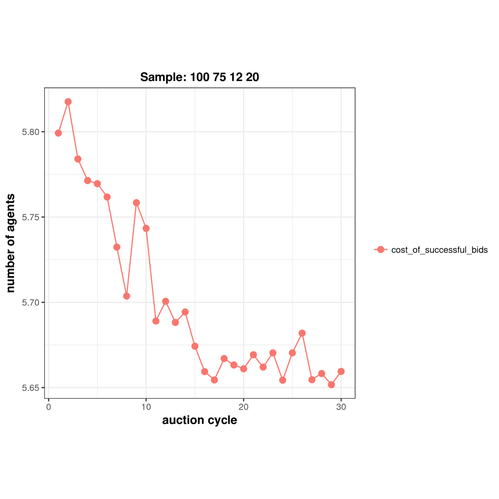

This report is valid for commit 5c3a824.
All experiments were repeated 20 times. Each data point on the graphs below represents the average value from 20 runs.
The SA experiments are configured with the following six parameters:
| Parameter | Description |
|---|---|
numberOfAgents |
number of landholder agents in the simulation |
highCEAgentsPercentage |
Percentage of agents with high conservation ethic |
targetPercentage |
Percentage of maximum possible target (if all agents bid on the highest package) that should be assigned as the target |
sigmoidMaxStepX |
Limits the amount by which the sigmoid function value can change in one step by limiting the max change in x by this value |
profitMotiveUpdateMultiplier |
Multiplier in range [0.0,1.0] applied to sigmoidMaxStepX to calculate an agent's profit motive change |
socialNormUpdateMultiplier |
Multiplier in range [0.0,1.0] applied to sigmoidMaxStepX to control how quickly an agent's CE gravitates towards the social norm |
[TO DO] Explain SA and the results. The following figure shows the correlation results:

Our first set of simulation results show the emergence of motivational crowding out, where monetary reward (profit) can negatively impact the intrinsic motivation to conserve (conservation ethic). The figure below shows how the percentage of high-conservation (HC) and high-profit (HP) agents changes over successive auctions, in two different initial populations:
In HC25, the relatively higher starting proportion of HP agents leads to greater profit chasing and overall the conservation ethic in the population declines, from a combination of unsuccessful bids leading to lower participation in the HC group, and the negative effect on CE from observed profits of others. In contrast, for HC75 where the relative proportion of HC agents in the population is high to start with, the population as a whole establishes a high conservation ethic, largely from the pull towards the established (higher) conservation norm in the society.
| HC25: types of agents over time | HC75: types of agents over time |
|---|---|
|
We also find significant and interesting differences in the two populations with respect to the auction participation rate over time. In HC75 the participation rate starts at ~65% and steadily increases and settles at ~80%, following a similat increasing in the number of HC agents that have higher participation rates than HP agents. In contrast, in HC25 the initial participation rate is significantly lower at ~45%. Moreover it drops sharply to well below half that in the first few rounds, before gradually climbing back to the initial level, driven predominantly by HP landholders gradually getting more involved. At around round 10, the total participation rate for HC75 is ~5 times that of HC25 and by 30 rounds the difference is still ~2 times.
| HC25: participation over time | HC75: participation over time |
|---|---|
|  |  |
Next we look at the difference in cost to the agency between the two sample populations, and how this cost varies over time. The figure below shows the result. We find that in HC25, as the high profit seeking behaviour increases over time, the cost to the agency also steadily increases. In comparison, in HC75, the cost starts off slightly lower, and stays relatively constant over time. This is because the latter has more HC agents, who tend to bid with moderate to low profit margins. After 30 rounds, the cost of auctions for HC25 is more than double that of HC75. The cumulative cost over all rounds for HC25 is 73% higher than HC75 (up from 171 to 295). This is despite the fact that the participation rate for HC75 is much higher than HC25 as already shown.
| HC25: cost of auctions over time | HC75: cost of auctions over time |
|---|---|
|  |  |
[OLD TEXT. RESULT NOT VERIFIED YET] Finally, we explored the impact of social cohesion–the degree to which the CE of a landholder is influenced by the conservation norm. To do this, we created two versions each of our HC25 and HC75 populations—one with low social cohesion and one with high–giving us four populations, and repeated our experiments. Figure 3 shows how social cohesion impacts cost. Compared to the experiment in Figure 2–where the social cohesion was moderate–we find that an increase in social cohesion leads to an overall increase in HC landholders due to the stronger influence from the conservation norm. This in turn results in overall costs being substantially less than in the earlier case with moderate social cohesion.
This experiment introduces the notion of extension offcier visits. In this phase, it is assumed that the extension office has sufficient funds to support officer visits to each landholder that has an active contract. Won contracts stay active for 3 years in the model, and all landholders with active contracts are visiting once per round. The impact of the visit on the landholder is a boost in their conservation ethic (along the S-curve).
The types of agents over time for HC75 with visits is very similar to HC75 without visits. For HC25 though, we see an interesting effect from the visits. In the early rounds, as expected, the number of HC agents increases due to the boost in conservation ethics from the visits. However, after around 10 rounds, we find that the HC population as a whole stays fairly constant. However within the HC population, those with high profit motive (HCHP) continue to increase in numbers, while those with low profit motive (HCLP) start to decrease. The overall impact is that by round 30, almost all landholders in the population have a high profit motive!
| HC25: types of agents over time | HC75: types of agents over time |
|---|---|
|  |  |
Participation rates for HC75 with or without visits are very similar. Hoever, for HC25 with visits we no longer see a drop in participation as we did for HC25 without visits and the participation rate stays fairly constant over time. So visits have resulted in an overall increase in participation in the HC25 population. This is due to the overall increase in the HCHP agents who have a high likelihood of participation.
| HC25: participation over time | HC75: participation over time |
|---|---|
|  |  |
After 30 rounds, the cumulative cost over all rounds for HC75 is the same as in the case without visits, as shown below. However, for HC25 the accumulated cost with visits is 27% lower than when there were no visits (down from 295 to 214). This is interesting, given that the entire population almost exclusively has high motive profit. The reason why the costs are lower though is that almost half of those agents also have high conservation ethics (HPHC) and tend to place bids with moderate profit margins compared to those with high profit and low conservatin ethics (HPLC) who dominate the original setting.
| HC25: cost of auctions over time | HC75: cost of auctions over time |
|---|---|
|  |  |
The experiments can only be run on Sarah's old Macbook Pro (MBP) laptop at the moment. That is because the GAMS license we have is tied to that machine. To make running tests easier, we have a script that can launch the tests remotely so that we do not need physical access to the machine. The script assumes that you have SSH configured so that you can login to the machine without a password, or in other words the command ssh gams-machine should get you in. You will want to set that up first. Once you have done that, the experiments can be launched from any remote machine.
The following sections describe the steps involved in running the experiments.
For instructions on how to build the distribution see the conservation README.md.
Sensitivity Analysis (SA) samples are generated using the Nearly Othogonal Latin Hypercube (NOLH) method. If you wish to add new parameters to the latin hypercube, edit the NOLH spreadsheet and then cut and paste the samples that the spreadsheet generates into samples.txt (note that the separator is the TAB character, and not spaces). You will also have to update the number of samples in config.
To run the SA experiments, change to the test directory and do the following:
./run-on-gams-machineThis will SSH to the GAMS MBP and launch the tests there. The run may take a couple of hours depending on the number of samples, and the number of replicates (repeats) per sample. Roughly, each run takes about a minute, so if you have 17 samples running 20 replicates each, then you'll be looking at something in the order of 17*20 minutes for the experiments to complete.
To run these experiments, change to the test directory and do the following:
./run-on-gams-machine ./run-hi-ce-comparison.shThese experiments take about one hour to run.
Download all the results from the GAMS MBP onto your machine. To do that, create a directory to save the results in (name it something meaningful such as testing-20170801-f5acd62-sa so that you know what code version the experiments correspond to). Then do something like:
rsync -avz gams-macbook:testing/ testing-20170801-f5acd62-sa/Now we will post process our results into a database, to make further analysis and plotting easier. To to that, change to the test directory and run the postproc.sh script, pointing it to the test results directory that contains the samples.txt file. For example, if the directory structure is ./testing-20170801-f5acd62-sa/test/output/samples.txt, then you would do something like:
./postproc.sh ./testing-20170801-f5acd62-sa/test/output/This will create the database ./testing-20170801-f5acd62-sa/test/output/output.db
You have to do this for each scenario that was run. For instance, for the two-scenario experiments, you will have to do all of the following:
./postproc.sh ../testing-20170816-5c3a824-hice/test/run-hi-ce-comparison.sh.output.hice25/
./postproc.sh ../testing-20170816-5c3a824-hice/test/run-hi-ce-comparison.sh.output.hice25.visit/
./postproc.sh ../testing-20170816-5c3a824-hice/test/run-hi-ce-comparison.sh.output.hice75/
./postproc.sh ../testing-20170816-5c3a824-hice/test/run-hi-ce-comparison.sh.output.hice75.visit/Finally, you can plot the results. To do that, change to the new RScripts directory and try the following kinds of commands to plot various results (they all get saved in the same directory as the output.db database):
./correlation.R ../../testing-20170801-f5acd62-sa/test/output/ 30
./plot_number_of_agents.R ../../../testing-20170801-f5acd62-hice/test/run-hi-ce-comparison.sh.output.hice75.visit/ 30Here the parameter 30 refers to the number of auction cycles that were run.
[DESCRIBE HOW THE SIGMOID (S-CURVE) IS USED IN THE MODEL]
This report is written in Markdown. The HTML version of this report was produced using Pandoc with the following command:
pandoc -s --toc -f markdown_github -t html5 -c ./github-pandoc.css README.md > README.html Any questions, just ask me.